Chapter 14
Biomolecules
Biomolecules

Objectives
After studying this Unit, you will be able to
"It is the harmonious and synchronous progress of chemical reactions in body which leads to life".
A living system grows, sustains and reproduces itself. The most amazing thing about a living system is that it is composed of non-living atoms and molecules. The pursuit of knowledge of what goes on chemically within a living system falls in the domain of biochemistry. Living systems are made up of various complex biomolecules like carbohydrates, proteins, nucleic acids, lipids, etc. Proteins and carbohydrates are essential constituents of our food. These biomolecules interact with each other and constitute the molecular logic of life processes. In addition, some simple molecules like vitamins and mineral salts also play an important role in the functions of organisms. Structures and functions of some of these biomolecules are discussed in this Unit.
Carbohydrates are primarily produced by plants and form a very large group of naturally occurring organic compounds. Some common examples are cane sugar, glucose, starch, etc. Most of them have a general formula, Cx(H2O)y, and were considered as hydrates of carbon from where the name carbohydrate was derived. For example, the molecular formula of glucose (C6H12O6) fits into this general formula, C6(H2O)6. But all the compounds which fit into this formula may not be classified as carbohydrates. Acetic acid (CH3COOH) fits into this general formula, C2(H2O)2 but is not a carbohydrate. Similarly, rhamnose, C6H12O5 is a carbohydrate but does not fit in this definition. A large number of their reactions have shown that they contain specific functional groups. Chemically, the carbohydrates may be defined as optically active polyhydroxy aldehydes or ketones or the compounds which produce such units on hydrolysis. Some of the carbohydrates, which are sweet in taste, are also called sugars. The most common sugar, used in our homes is named as sucrose whereas the sugar present in milk is known as lactose. Carbohydrates are also called saccharides (Greek: sakcharon means sugar).
Carbohydrates are classified on the basis of their behaviour on hydrolysis. They have been broadly divided into following three groups.
(i) Monosaccharides: A carbohydrate that cannot be hydrolysed further to give simpler unit of polyhydroxy aldehyde or ketone is called a monosaccharide. About 20 monosaccharides are known to occur in nature. Some common examples are glucose, fructose, ribose, etc.
(ii) Oligosaccharides: Carbohydrates that yield two to ten monosaccharide units, on hydrolysis, are called oligosaccharides. They are further classified as disaccharides, trisaccharides, tetrasaccharides, etc., depending upon the number of monosaccharides, they provide on hydrolysis. Amongst these the most common are disaccharides. The two monosaccharide units obtained on hydrolysis of a disaccharide may be same or different. For example, sucrose on hydrolysis gives one molecule each of glucose and fructose whereas maltose gives two molecules of glucose only.
(iii) Polysaccharides: Carbohydrates which yield a large number of monosaccharide units on hydrolysis are called polysaccharides. Some common examples are starch, cellulose, glycogen, gums, etc. Polysaccharides are not sweet in taste, hence they are also called non-sugars.
The carbohydrates may also be classified as either reducing or nonreducing sugars. All those carbohydrates which reduce Fehling's solution and Tollens' reagent are referred to as reducing sugars. All monosaccharides whether aldose or ketose are reducing sugars.
In disaccharides, if the reducing groups of monosaccharides i.e., aldehydic or ketonic groups are bonded, these are non-reducing sugars e.g. sucrose. On the other hand, sugars in which these functional groups are free, are called reducing sugars, for example, maltose and lactose.
Monosaccharides are further classified on the basis of number of carbon atoms and the functional group present in them. If a monosaccharide contains an aldehyde group, it is known as an aldose and if it contains a keto group, it is known as a ketose. Number of carbon atoms constituting the monosaccharide is also introduced in the name as is evident from the examples given in Table 14.1
Table 14.1: Different Types of Monosaccharides
|
Carbon atoms
|
General term
|
Aldehyde
|
Ketone
|
|
3
|
Triose
|
Aldotriose
|
Ketotriose
|
|
4
|
Tetrose
|
Aldotetrose
|
Ketotetrose
|
|
5
|
Pentose
|
Aldopentose
|
Ketopentose
|
|
6
|
Hexose
|
Aldohexose
|
Ketohexose
|
|
7
|
Heptose
|
Aldoheptose
|
Ketoheptose
|
I Glucose
Glucose occurs freely in nature as well as in the combined form. It is present in sweet fruits and honey. Ripe grapes also contain glucose in large amounts. It is prepared as follows:
1. From sucrose (Cane sugar): If sucrose is boiled with dilute HCl or H2SO4 in alcoholic solution, glucose and fructose are obtained in equal amounts.

2. From starch: Commercially glucose is obtained by hydrolysis of starch by boiling it with dilute H2SO4 at 393 K under pressure.

Glucose is an aldohexose and is also known as dextrose. It is the monomer of many of the larger carbohydrates, namely starch, cellulose. It is probably the most abundant organic compound on earth. It was assigned the structure given below on the basis of the following evidences:

1. Its molecular formula was found to be C6H12O6.
2. On prolonged heating with HI, it forms n-hexane, suggesting that all the six carbon atoms are linked in a straight chain.
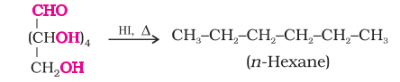
3. Glucose reacts with hydroxylamine to form an oxime and adds a molecule of hydrogen cyanide to give cyanohydrin. These reactions confirm the presence of a carbonyl group (>C = O) in glucose.
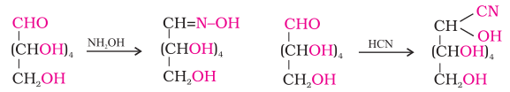
4. Glucose gets oxidised to six carbon carboxylic acid (gluconic acid) on reaction with a mild oxidising agent like bromine water. This indicates that the carbonyl group is present as an aldehydic group.

5. Acetylation of glucose with acetic anhydride gives glucose pentaacetate which confirms the presence of five –OH groups. Since it exists as a stable compound, five –OH groups should be attached to different carbon atoms.

6. On oxidation with nitric acid, glucose as well as gluconic acid both yield a dicarboxylic acid, saccharic acid. This indicates the presence of a primary alcoholic (–OH) group in glucose.
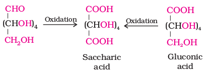
The exact spatial arrangement of different —OH groups was given by Fischer after studying many other properties. Its configuration is correctly represented as I. So gluconic acid is represented as II and saccharic acid as III.
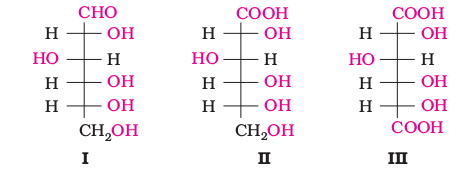
Glucose is correctly named as D(+)-glucose. 'D' before the name of glucose represents the configuration whereas '(+)' represents dextrorotatory nature of the molecule. It may be remembered that 'D' and 'L' have no relation with the optical activity of the compound. The meaning of D– and L– notations is given as follows.

All those compounds which can be chemically correlated to (+) isomer of glyceraldehyde are said to have D-configuration whereas those which can be correlated to (–) isomer of glyceraldehyde are said to have L—configuration. For assigning the configuration of monosaccharides, it is the lowest asymmetric carbon atom (as shown below) which is compared. As in (+) glucose, —OH on the lowest asymmetric carbon is on the right side which is comparable to (+) glyceraldehyde, so it is assigned D-configuration. For this comparison, the structure is written in a way that most oxidised carbon is at the top.

The structure (I) of glucose explained most of its properties but the following reactions and facts could not be explained by this structure.

The two cyclic hemiacetal forms of glucose differ only in the configuration of the hydroxyl group at C1, called anomeric carbon (the aldehyde carbon before cyclisation). Such isomers, i.e., α-form and β-form, are called anomers. The six membered cyclic structure of glucose is called pyranose structure (α – or β–), in analogy with pyran. Pyran is a cyclic organic compound with one oxygen atom and five carbon atoms in the ring. The cyclic structure of glucose is more correctly represented by Haworth structure as given below.
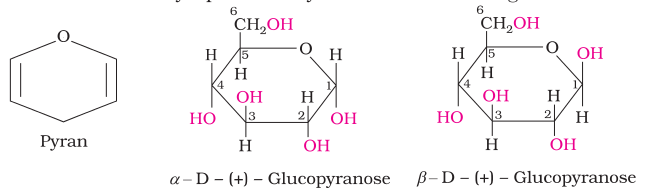
II. Fructose
Fructose also has the molecular formula C6H12O6 and on the basis of its reactions it was found to contain a ketonic functional group at carbon number 2 and six carbons in straight chain as in the case of glucose. It belongs to D-series and is a laevorotatory compound. It is appropriately written as D-(–)-fructose. Its open chain structure is as shown.

It also exists in two cyclic forms which are obtained by the addition of  The ring, thus formed is a five membered ring and is named as furanose with analogy to the compound furan. Furan is a five membered cyclic compound with one oxygen and four carbon atoms.
The ring, thus formed is a five membered ring and is named as furanose with analogy to the compound furan. Furan is a five membered cyclic compound with one oxygen and four carbon atoms.
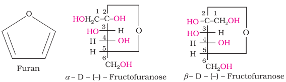
The cyclic structures of two anomers of fructose are represented by Haworth structures as given.

You have already read that disaccharides on hydrolysis with dilute acids or enzymes yield two molecules of either the same or different monosaccharides. The two monosaccharides are joined together by an oxide linkage formed by the loss of a water molecule. Such a linkage between two monosaccharide units through oxygen atom is called glycosidic linkage.

These two monosaccharides are held together by a glycosidic linkage between C1 of α -glucose and C2 of β-fructose. Since the reducing groups of glucose and fructose are involved in glycosidic bond formation, sucrose is a non reducing sugar.
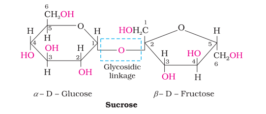
Sucrose is dextrorotatory but after hydrolysis gives dextrorotatory glucose and laevorotatory fructose. Since the laevorotation of fructose (–92.4°) is more than dextrorotation of glucose (+ 52.5°), the mixture is laevorotatory. Thus, hydrolysis of sucrose brings about a change in the sign of rotation, from dextro (+) to laevo (–) and the product is named as invert sugar.

(iii) Lactose: It is more commonly known as milk sugar since this disaccharide is found in milk. It is composed of β-D-galactose and β-D-glucose. The linkage is between C1 of galactose and C4 of glucose. Hence it is also a reducing sugar.

Polysaccharides contain a large number of monosaccharide units joined together by glycosidic linkages. These are the most commonly encountered carbohydrates in nature. They mainly act as the food storage or structural materials.
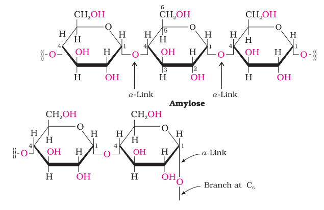
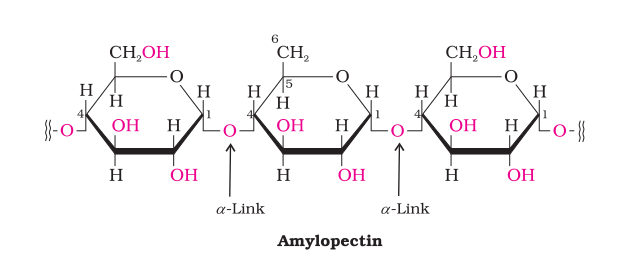
(ii) Cellulose: Cellulose occurs exclusively in plants and it is the most abundant organic substance in plant kingdom. It is a predominant constituent of cell wall of plant cells. Cellulose is a straight chain
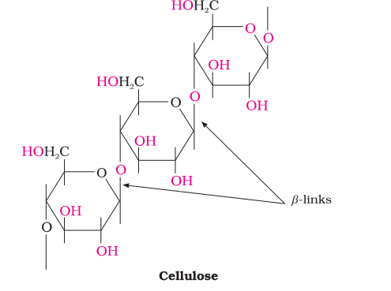
polysaccharide composed only of β-D-glucose units which are joined by glycosidic linkage between C1 of one glucose unit and C4 of the next glucose unit.
Carbohydrates are essential for life in both plants and animals. They form a major portion of our food. Honey has been used for a long time as an instant source of energy by 'Vaids' in ayurvedic system of medicine. Carbohydrates are used as storage molecules as starch in plants and glycogen in animals. Cell wall of bacteria and plants is made up of cellulose. We build furniture, etc. from cellulose in the form of wood and clothe ourselves with cellulose in the form of cotton fibre. They provide raw materials for many important industries like textiles, paper, lacquers and breweries.
Two aldopentoses viz. D-ribose and 2-deoxy-D-ribose (Section 14.5.1, Class XII) are present in nucleic acids. Carbohydrates are found in biosystem in combination with many proteins and lipids.
Intext Questions
Proteins are the most abundant biomolecules of the living system. Chief sources of proteins are milk, cheese, pulses, peanuts, fish, meat, etc. They occur in every part of the body and form the fundamental basis of structure and functions of life. They are also required for growth and maintenance of body. The word protein is derived from Greek word, "proteios" which means primary or of prime importance. All proteins are polymers of α -amino acids.
Amino acids contain amino (–NH2) and carboxyl (–COOH) functional groups. Depending upon the relative position of amino group with respect to carboxyl group, the amino acids can be classified as α, β, γ, δ and so on. Only α-amino acids are obtained on hydrolysis of proteins. They may contain other functional groups also.

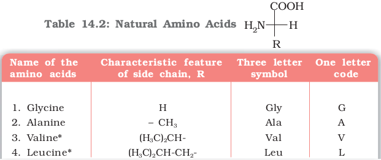 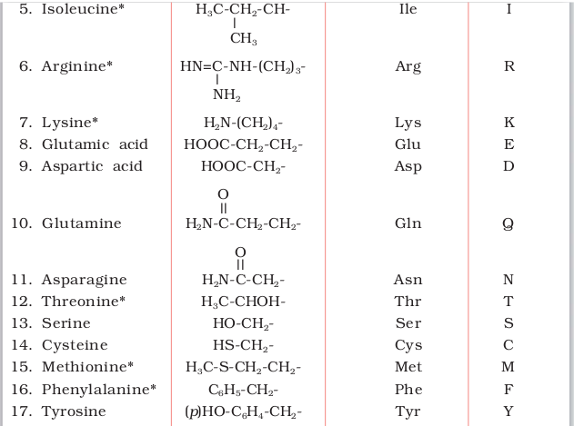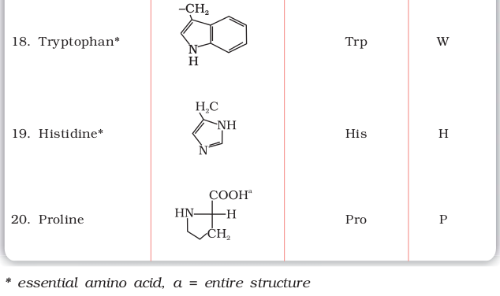
Amino acids are classified as acidic, basic or neutral depending upon the relative number of amino and carboxyl groups in their molecule. Equal number of amino and carboxyl groups makes it neutral; more number of amino than carboxyl groups makes it basic and more carboxyl groups as compared to amino groups makes it acidic. The amino acids, which can be synthesised in the body, are known as nonessential amino acids. On the other hand, those which cannot be synthesised in the body and must be obtained through diet, are known as essential amino acids (marked with asterisk in Table 14.2).
Amino acids are usually colourless, crystalline solids. These are water-soluble, high melting solids and behave like salts rather than simple amines or carboxylic acids. This behaviour is due to the presence of both acidic (carboxyl group) and basic (amino group) groups in the same molecule. In aqueous solution, the carboxyl group can lose a proton and amino group can accept a proton, giving rise to a dipolar ion known as zwitter ion. This is neutral but contains both positive and negative charges.

In zwitter ionic form, amino acids show amphoteric behaviour as they react both with acids and bases.
You have already read that proteins are the polymers of α-amino acids and they are connected to each other by peptide bond or peptide linkage. Chemically, peptide linkage is an amide formed between –COOH group and –NH2 group. The reaction between two molecules of similar or different amino acids, proceeds through the combination of the amino group of one molecule with the carboxyl group of the other. This results in the elimination of a water molecule and formation of a peptide bond –CO–NH–. The product of the reaction is called a dipeptide because it is made up of two amino acids. For example, when carboxyl group of glycine combines with the amino group of alanine we get a dipeptide, glycylalanine.

If a third amino acid combines to a dipeptide, the product is called a tripeptide. A tripeptide contains three amino acids linked by two peptide linkages. Similarly when four, five or six amino acids are linked, the respective products are known as tetrapeptide, pentapeptide or hexapeptide, respectively. When the number of such amino acids is more than ten, then the products are called polypeptides. A polypeptide with more than hundred amino acid residues, having molecular mass higher than 10,000u is called a protein. However, the distinction between a polypeptide and a protein is not very sharp. Polypeptides with fewer amino acids are likely to be called proteins if they ordinarily have a well defined conformation of a protein such as insulin which contains 51 amino acids.
Proteins can be classified into two types on the basis of their molecular shape.
(a) Fibrous proteins
(b) Globular proteins
 –NH– groups of the peptide bond.
–NH– groups of the peptide bond.
α-Helix is one of the most common ways in which a polypeptide chain forms all possible hydrogen bonds by twisting into a right handed screw (helix) with the –NH group of each amino acid residue hydrogen bonded to the  of an adjacent turn of the helix as shown in Fig.14.1.
of an adjacent turn of the helix as shown in Fig.14.1.

Fig. 14.1: α-Helix structure of proteins
In β-structure all peptide chains are stretched out to nearly maximum extension and then laid side by side which are held together by intermolecular hydrogen bonds. The structure resembles the pleated folds of drapery and therefore is known as β-pleated sheet.
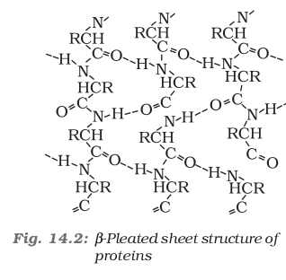
(iv) Quaternary structure of proteins: Some of the proteins are composed of two or more polypeptide chains referred to as sub-units. The spatial arrangement of these subunits with respect to each other is known as quaternary structure.
A diagrammatic representation of all these four structures is given in Figure 14.3 where each coloured ball represents an amino acid.
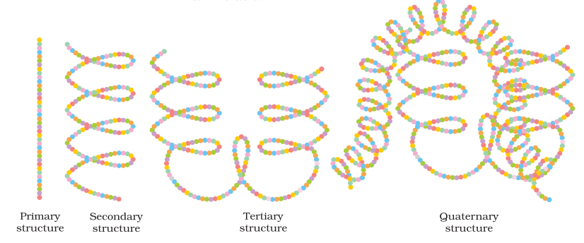
Fig. 14.3: Diagrammatic representation of protein structure (two sub-units of two types in quaternary structure)
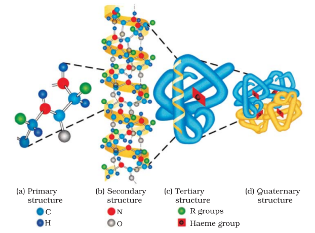
Fig 14.4: Primary, secondary, teritary and quaternary structures of haemoglobin.
Protein found in a biological system with a unique three-dimensional structure and biological activity is called a native protein. When a protein in its native form, is subjected to physical change like change in temperature or chemical change like change in pH, the hydrogen bonds are disturbed. Due to this, globules unfold and helix get uncoiled and protein loses its biological activity. This is called denaturation of protein. During denaturation 2° and 3° structures are destroyed but 1º structure remains intact. The coagulation of egg white on boiling is a common example of denaturation. Another example is curdling of milk which is caused due to the formation of lactic acid by the bacteria present in milk.
Intext Questions
Life is possible due to the coordination of various chemical reactions in living organisms. An example is the digestion of food, absorption of appropriate molecules and ultimately production of energy. This process involves a sequence of reactions and all these reactions occur in the body under very mild conditions. This occurs with the help of certain biocatalysts called enzymes. Almost all the enzymes are globular proteins. Enzymes are very specific for a particular reaction and for a particular substrate. They are generally named after the compound or class of compounds upon which they work. For example, the enzyme that catalyses hydrolysis of maltose into glucose is named as maltase.
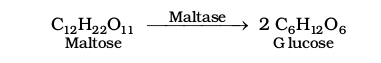
Sometimes enzymes are also named after the reaction, where they are used. For example, the enzymes which catalyse the oxidation of one substrate with simultaneous reduction of another substrate are named as oxidoreductase enzymes. The ending of the name of an enzyme is -ase.
Enzymes are needed only in small quantities for the progress of a reaction. Similar to the action of chemical catalysts, enzymes are said to reduce the magnitude of activation energy. For example, activation energy for acid hydrolysis of sucrose is 6.22 kJ mol–1, while the activation energy is only 2.15 kJ mol–1 when hydrolysed by the enzyme, sucrase. Mechanism for the enzyme action has been discussed in Unit 5.
144 Vitamins
It has been observed that certain organic compounds are required in small amounts in our diet but their deficiency causes specific diseases. These compounds are called vitamins. Most of the vitamins cannot be synthesised in our body but plants can synthesise almost all of them, so they are considered as essential food factors. However, the bacteria of the gut can produce some of the vitamins required by us. All the vitamins are generally available in our diet. Different vitamins belong to various chemical classes and it is difficult to define them on the basis of structure. They are generally regarded as organic compounds required in the diet in small amounts to perform specific biological functions for normal maintenance of optimum growth and health of the organism. Vitamins are designated by alphabets A, B, C, D, etc. Some of them are further named as sub-groups e.g. B1, B2, B6, B12, etc. Excess of vitamins is also harmful and vitamin pills should not be taken without the advice of doctor.
Vitamins are classified into two groups depending upon their solubility in water or fat.
(i) Fat soluble vitamins: Vitamins which are soluble in fat and oils but insoluble in water are kept in this group. These are vitamins A, D, E and K. They are stored in liver and adipose (fat storing) tissues.
Some important vitamins, their sources and diseases caused by their deficiency are listed in Table 14.3.
Table 14.3: Some important Vitamins, their Sources and their Deficiency Diseases
|
SI.No
|
Name of Vitamins
|
Sources
|
Deflelency diseases
|
|
1.
|
Vitamin A
|
Fish liver oil, carrots,
butter and milk |
X e r o p h t h a l m i a
(hardening of cornea of eye) Night blindness |
|
2.
|
Vitamin B1 (Thiamine)
|
Yeast, milk, green
vegetables and cereals |
Beri beri (loss of appetite,
retarded growth) |
|
3.
|
Vitamin B2 (Riboflavin)
|
Milk, eggwhite, liver,
kidney |
Cheilosis (fissuring at
corners of mouth and lips), digestive disorders and burning sensation of the skin. |
|
4.
|
Vitamin B6 (Pyridoxine)
|
Yeast, milk, egg yolk,
cereals and grams |
Convulsions
|
|
5.
|
Vitamin B12
|
Meat, fish, egg and
curd |
Pernicious anaemia
(RBC deficient in haemoglobin) |
|
6.
|
Vitamin C (Ascorbic acid)
|
Citrus fruits, amla and
green leafy vegetables |
Scurvy (bleeding gums)
|
|
7.
|
Vitamin D
|
Exposure to sunlight,
fish and egg yolk |
Rickets (bone deformities
in children) and osteomalacia (soft bones and joint pain in adults) |
|
8.
|
Vitamin E
|
Vegetable oils like wheat
germ oil, sunflower oil, etc. |
Increased fragility of
RBCs and muscular weakness |
|
9.
|
Vitamin K
|
Green leafy vegetables
|
Increased blood clotting
time |
Every generation of each and every species resembles its ancestors in many ways. How are these characteristics transmitted from one generation to the next? It has been observed that nucleus of a living cell is responsible for this transmission of inherent characters, also called heredity. The particles in nucleus of the cell, responsible for heredity, are called chromosomes which are made up of proteins and another type of biomolecules called nucleic acids. These are mainly of two types, the deoxyribonucleic acid (DNA) and ribonucleic acid (RNA). Since nucleic acids are long chain polymers of nucleotides, so they are also called polynucleotides.
James Dewey Watson
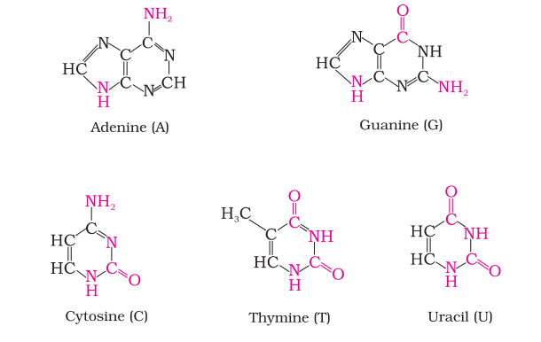 Born in Chicago, Illinois, in 1928, Dr Watson received his Ph.D. (1950) from Indiana University in Zoology. He is best known for his discovery of the structure of DNA for which he shared with Francis Crick and Maurice Wilkins the 1962 Nobel prize in Physiology and Medicine. They proposed that DNA molecule takes the shape of a double helix, an elegantly simple structure that resembles a gently twisted ladder. The rails of the ladder are made of alternating units of phosphate and the sugar deoxyribose; the rungs are each composed of a pair of purine/ pyrimidine bases. This research laid the foundation for the emerging field of molecular biology. The complementary pairing of nucleotide bases explains how identical copies of parental DNA pass on to two daughter cells. This research launched a revolution in biology that led to modern recombinant DNA techniques.

DNA contains four bases viz. adenine (A), guanine (G), cytosine (C) and thymine (T). RNA also contains four bases, the first three bases are same as in DNA but the fourth one is uracil (U).

A unit formed by the attachment of a base to 1′ position of sugar is known as nucleoside. In nucleosides, the sugar carbons are numbered as 1′, 2′, 3′, etc. in order to distinguish these from the bases (Fig. 14.5a). When nucleoside is linked to phosphoric acid at 5′-position of sugar moiety, we get a nucleotide (Fig. 14.5). 14.5.2 Structure
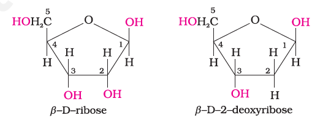
Fig. 14.5: Structure of (a) a nucleoside and (b) a nucleotide
Nucleotides are joined together by phosphodiester linkage between 5′ and 3′ carbon atoms of the pentose sugar. The formation of a typical dinucleotide is shown in Fig. 14.6.
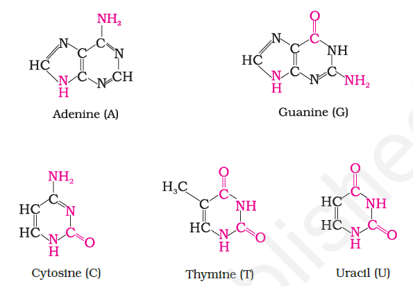
Fig. 14.6: Formation of a dinucleotide
A simplified version of nucleic acid chain is as shown below.
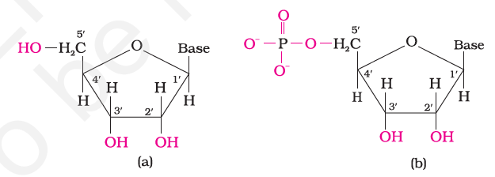
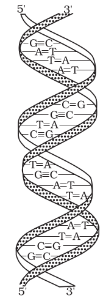
Fig. 14.7: Double strand helix structure for DNA
Information regarding the sequence of nucleotides in the chain of a nucleic acid is called its primary structure. Nucleic acids have a secondary structure also. James Watson and Francis Crick gave a double strand helix structure for DNA (Fig. 14.7). Two nucleic acid chains are wound about each other and held together by hydrogen bonds between pairs of bases. The two strands are complementary to each other because the hydrogen bonds are formed between specific pairs of bases. Adenine forms hydrogen bonds with thymine whereas cytosine forms hydrogen bonds with guanine.
Har Gobind Khorana
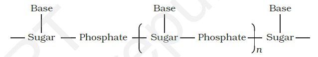 Har Gobind Khorana, was born in 1922. He obtained his M.Sc. degree from Punjab University in Lahore. He worked with Professor
DNA Fingerprinting
(i) in forensic laboratories for identification of criminals.
(ii) to determine paternity of an individual.
DNA is the chemical basis of heredity and may be regarded as the reserve of genetic information. DNA is exclusively responsible for maintaining the identity of different species of organisms over millions of years. A DNA molecule is capable of self duplication during cell division and identical DNA strands are transferred to daughter cells. Another important function of nucleic acids is the protein synthesis in the cell. Actually, the proteins are synthesised by various RNA molecules in the cell but the message for the synthesis of a particular protein is present in DNA.
Intext Questions
14.6 Why cannot vitamin C be stored in our body?
SUMMARY
Carbohydrates are optically active polyhydroxy aldehydes or ketones or molecules which provide such units on hydrolysis. They are broadly classified into three groups — monosaccharides, disaccharides and polysaccharides. Glucose, the most important source of energy for mammals, is obtained by the digestion of starch. Monosaccharides are held together by glycosidic linkages to form disaccharides or polysaccharides.
Vitamins are accessory food factors required in the diet. They are classified as fat soluble (A, D, E and K) and water soluble (Β group and C). Deficiency of vitamins leads to many diseases.
EXERCISES
14.1 What are monosaccharides?
14.5 What do you understand by the term glycosidic linkage?
14.6 What is glycogen? How is it different from starch?
(i) sucrose and (ii) lactose?
(i) HI (ii) Bromine water (iii) HNO3
14.10 Enumerate the reactions of D-glucose which cannot be explained by its open chain structure.
14.12 Define the following as related to proteins
14.19 How are vitamins classified? Name the vitamin responsible for the coagulation of blood.
14.22 What is the difference between a nucleoside and a nucleotide?
14.25 What are the different types of RNA found in the cell?